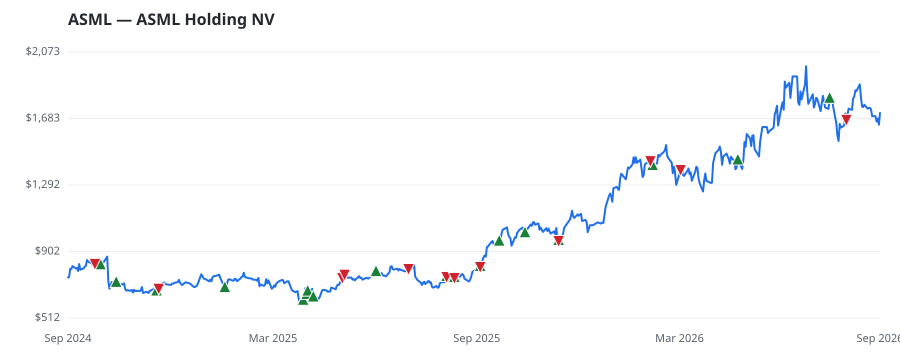

bullish · bearish · n/a — dots: price>SMA10 · SMA10>SMA50 · SMA50>SMA200 · up>down volume (20d)
Other · mega cap
Members who bought ASML earned a dollar-weighted +32.9% from their disclosure dates, versus +11.2% for the S&P 500 over the same holding windows (+21.7% alpha).

▲ green = a disclosed purchase · ▼ red = a disclosed sale (plotted on disclosure date)
ASML is the leader in lithography systems for manufacturing semiconductors with 90% market share. Lithography is the process in which a light source is used to expose circuit patterns from a photo mask onto a semiconductor wafer. Lithography allows chipmakers to increase the number of transistors on the same area of silicon, with lithography historically representing a high portion of the cost of making cutting-edge chips. ASML outsources the manufacturing of most of its parts, acting like an assembler. ASML's largest clients are TSMC, Samsung, Intel, SK Hynix, and Micron. · website
| Member | Chamber | Out-performer | Disclosed buys $ | Return on buys |
|---|---|---|---|---|
| Alan Armstrong | senate | — | $83K | -4.8% |
| Marjorie Taylor Greene | house | yes | $56K | +122.0% |
| Jared Moskowitz | house | — | $32K | +19.2% |
| Lisa McClain | house | — | $32K | +5.9% |
| Gilbert Cisneros | house | — | $16K | +26.1% |
| Josh Gottheimer | house | — | $16K | +68.5% |
| Ritchie John Torres | house | — | $16K | +0.0% |
| Bruce Westerman | house | — | $16K | +18.1% |
| Valerie Hoyle | house | — | $8K | +0.0% |
Disclosed $ figures are bracket midpoints — filings report ranges (e.g. $1,001–$15,000), not exact amounts.